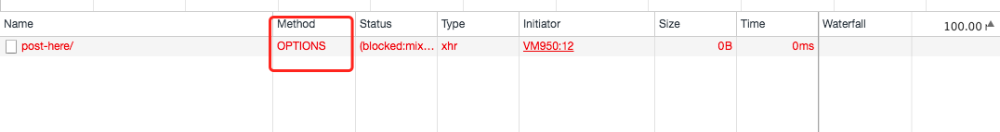

CORS是一个W3C标准，全称是”跨域资源共享”（Cross-origin resource sharing）
出于安全考虑，浏览器会限制某些跨域请求。
而 cors 允许浏览器想跨源服务器发起 XMLHttpRequest 和 Fetch 接口请求。
同源策略
同源策略限制从一个源加载的文档或脚本如何与来自另一个源的资源进行交互。这是一个用于隔离潜在恶意文件的关键的安全机制。
那么浏览器是根据什么规则来判定是否为同源呢
http://www.zuzuche.com:80
- 协议: http
- 端口: 80 (默认为80 如果没写 浏览器会帮我们做这些工作)
- 域名 www.zuzuche.com
如果协议， 端口， 域名一致，那么浏览器就会认定我们是在同个源下面。否则就会出现跨域问题。
简单请求与非简单请求
简单请求指的是
- 请求方法是以下方法之一
- GET
- POST
- HEAD
- 不自定义某些头部字段
- Accept
- Accept-Language
- Content-Language
- Content-Type （需要注意额外的限制）
- DPR
- Downlink
- Save-Data
- Viewport-Width
- Width
- Content-Type 为以下值之一
- application/x-www-form-urlencoded
- multipart/form-data
- text/plain
非简单请求(预检请求)指的是
- 使用了下面任一HTTP方法：
- PUT
- DELETE
- CONNECT
- OPTIONS
- TRACE
- PATCH
- 人为设置某些头部字段
- Accept
- Accept-Language
- Content-Language
- Content-Type (but note the additional requirements below)
- DPR
- Downlink
- Save-Data
- Viewport-Width
- Width
- Content-Type的值不属于下列之一
- application/x-www-form-urlencoded
- multipart/form-data
- text/plain
发起一个简单的请求
1 | fetch(''); |
此时会发起一个简单请求，和我们平时写的ajax没多大区别
发起一个非简单请求
1 | var invocation = new XMLHttpRequest(); |
此时发起的是一个非简单请求，所以浏览器会先发一个options请求服务器，以获知浏览器是否允许实际请求，如果允许再会发多一个真实请求。

cors
我们要跨域获取资源，主要要后台人员配合。
一般情况我们只需要把报错信息给后台人员看就知道怎么做了，比如我直接调用 报了一个跨域问题
Fetch API cannot load https://www.baidu.com/. No ‘Access-Control-Allow-Origin’ header is present on the requested resource. Origin ‘https://developer.mozilla.org' is therefore not allowed access. If an opaque response serves your needs, set the request’s mode to ‘no-cors’ to fetch the resource with CORS disabled.
直接把错误丢给后台人员，他们就知道设置一个属性 Access-Control-Allow-Origi 一般设置为 * 谁都可以访问 也可以根据情景设定特定的域名。
参考
https://developer.mozilla.org/zh-CN/docs/Web/HTTP/Access_control_CORS